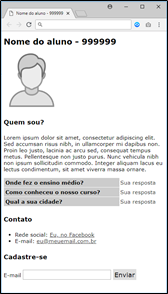

ANÁLISE E DESENVOLVIMENTO DE SISTEMAS
-2022-
FUNDAMENTOS DE DESENVOLVIMENTO WEB
Trabalho Prático 1
Quem Sou?
Crie uma página semanticamente correta, em HTML/CSS válido e adequadamente organizado, que resolva as seguintes questões a seguir. Um exemplo de implementação desta atividade pode ser observado na imagem acima.
HTML
No início da página, insira um cabeçalho de nível 1 contendo seu nome e RA. Caso seu trabalho tenha mais de um integrante, deverá existir, no topo da página, o respectivo link capaz de levar à página de cada um (exemplo: Jonathan Cardoso | Claudia Coimbra | ...). Abaixo do cabeçalho, insira uma pequena foto sua.A seguir, você deverá adicionar 3 seções ao seu documento, separadas por 3 cabeçalhos de nível 2, que são “Quem Sou?”, “Contato” e “Cadastre-se”.
Na seção “Quem Sou?”, escreva um pequeno parágrafo sobre você e o que te motivou a se juntar a fazer uma graduação na área de TI na Unisanta. Abaixo desta descrição, insira uma pequena tabela que responda as seguintes perguntas: “Onde fez o ensino médio?”, “Como conheceu o nosso curso?” e “Qual a sua cidade?”.
Na seção “Contato”, incorporados na forma de uma lista ordenada (ou não ordenada, como no exemplo), acrescente dois itens: um link para a sua presença em alguma rede social e outro para o seu e-mail de contato. Se não estiver em nenhuma rede social (LinkedIn, Instagram, Facebook...), crie um link para a própria página inicial de uma dessas redes à sua escolha.
Na seção “Cadastre-se”, adicione um pequeno formulário contendo apenas uma caixa específica para a entrada do e-mail e um botão de envio. Em tempo: o formulário poderá ser testado com a mesma URL que utilizamos em nossas aulas.
CSS
Adicione em seu exercício uma folha de estilos (que deve estar em pasta própria) capaz de conter de 5 a 10 regras CSS que alterem os mais diferentes aspectos visuais da página ao seu gosto, devendo conter ao menos uma classe, uma pseudoclasse e um id. Exemplos de propriedades que você pode utilizar: tipo de fonte da página e tamanho, cor de fundo da página, bordas, margens, enchimentos, cor do texto e dos links, entre outras. Por fim, seu trabalho deve incorporar, à sua escolha, ao menos 5 propriedades CSS não apresentadas pelo professor nas aulas. Os nomes das propriedades por você pesquisadas, escolhidas e utilizadas devem ser relacionados no espaço abaixo.